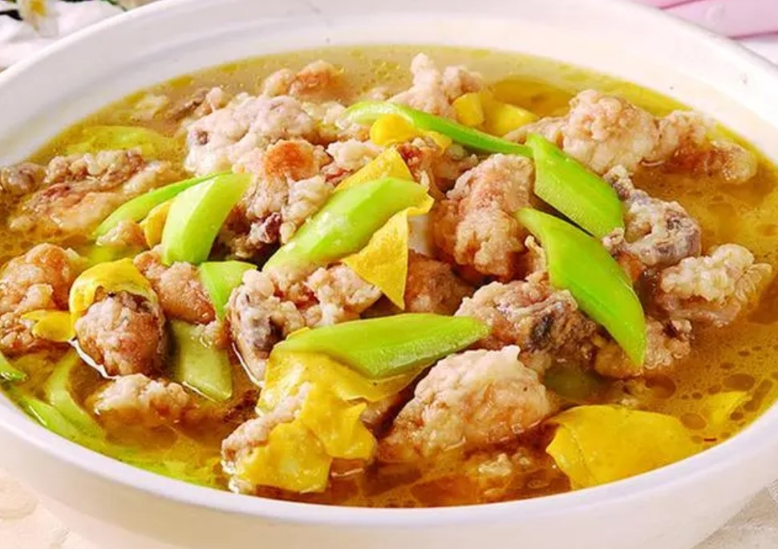
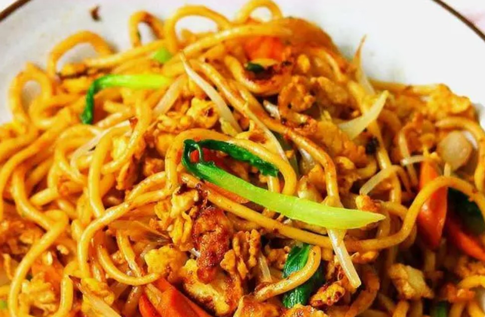

金谷春酒
金谷春，淮滨县特产酒，所产的金谷春、金谷醇、乌龙等系列白酒，醇厚甘甜，被评为河南白酒行业的五朵金花之一！

淮滨面炕鸡
面炕鸡，淮滨土话又称面包鸡，一道流传于淮滨、固始一带的特色美食，其肉质酥嫩鲜香，汤味甘醇，香气氤氲了淮滨人的整个童年。

淮滨炒面
淮滨炒面，淮滨县特色小吃，淮滨人都喜欢吃炒面、喝罐煨排骨汤，炒面酥香味美，罐汤浓郁醇厚，令人回味无穷。

淮滨芡实
芡实，又名鸡头菱，淮滨名优农产品，产于淮滨张庄、期思、王店等乡镇，全县芡实种植面积3.3万亩，年产值近2亿多元。